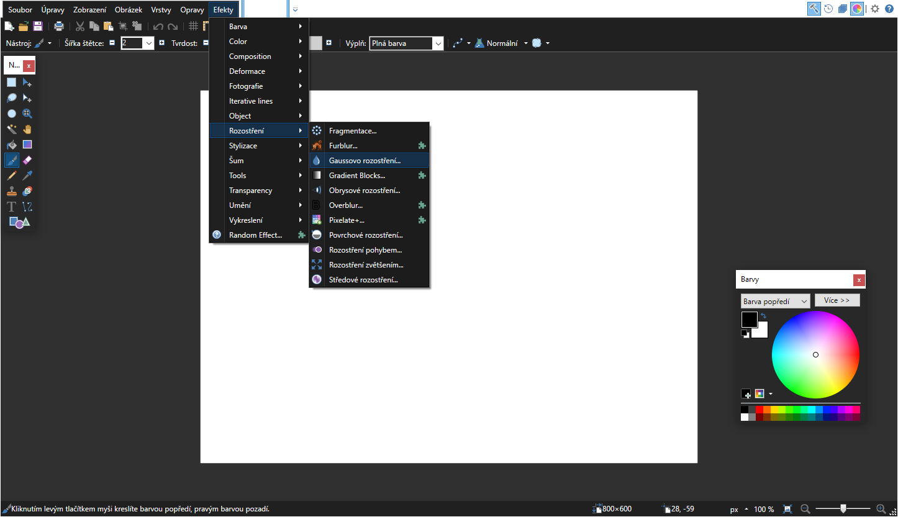
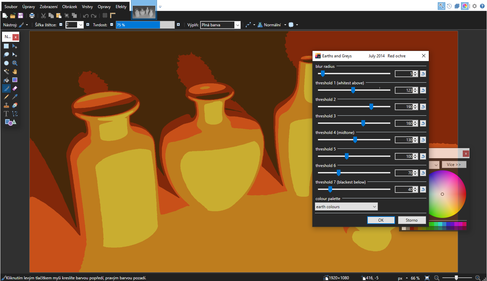
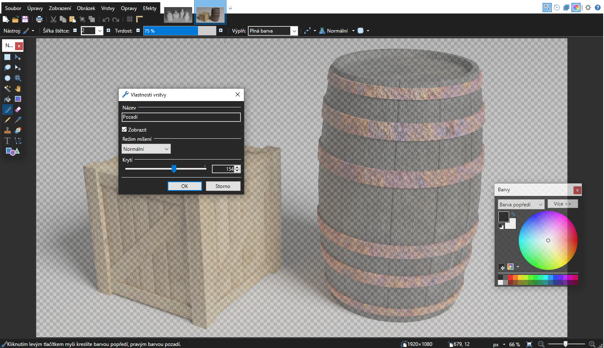
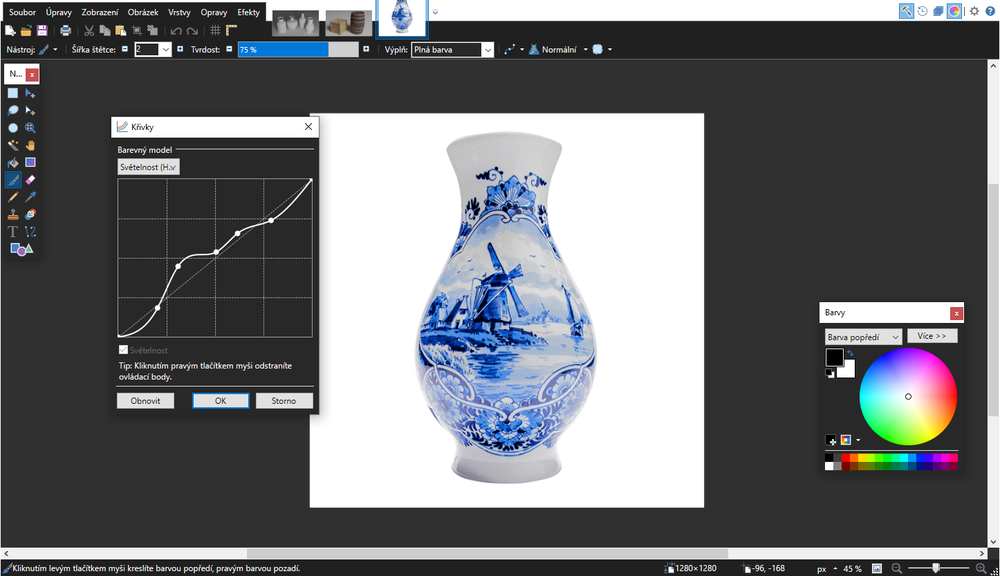

Efekty a filtry
Náš software zahrnuje přes více jak 80 různých efektů a filtrů pro vaše fotky. Od standartů jako rozostření po speciální efekty jako dodání světelných parsků nebo prodloužení stínů.
Fungujte skěle nejen s paintX Pro
Nemusíte se limitovat pouze s jedním nástrojem. Uložte svůj paintX projekt jako Photoshop PSD soubor nebo jako složený záběr pro movX Pro.
Vytvářejte textury v paintX Pro pro použití ve speciálnách efektech nebo s 3D modely. Všechny nástroje máte na dosah ruky.


